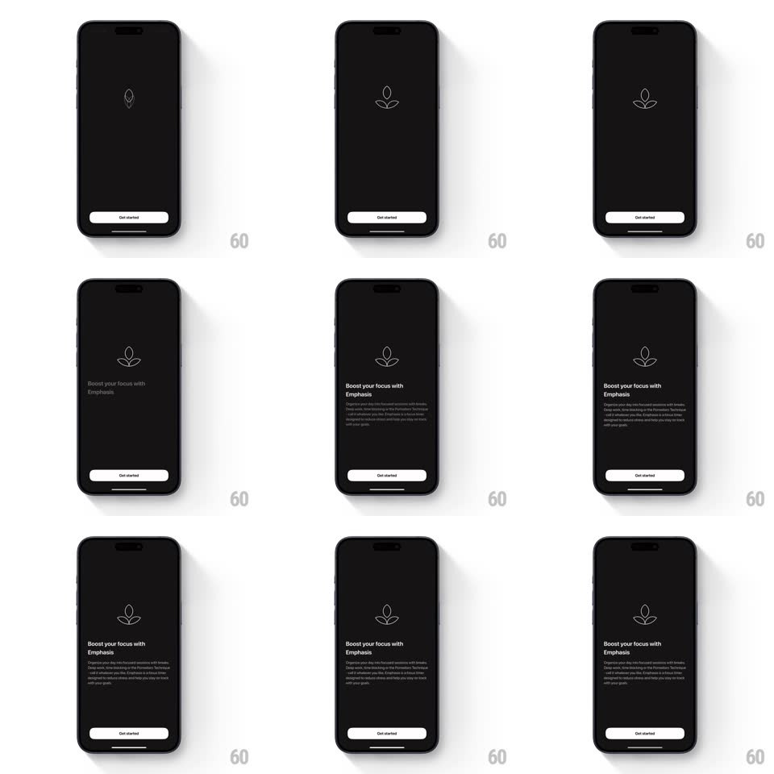

Media
Frame-by-frame

Rebuild this interaction 1:1: Emphasis's onboarding splash - on a black screen, the line-drawn Emphasis leaf logo fades in at center, then drifts upward as the headline ("Boost your focus with Emphasis") and staggered explainer lines reveal beneath it, with the white "Get started" button pinned at the bottom throughout.

Rebuild this interaction 1:1: Emphasis's onboarding splash - on a black screen, the line-drawn Emphasis leaf logo fades in at center, then drifts upward as the headline ("Boost your focus with Emphasis") and staggered explainer lines reveal beneath it, with the white "Get started" button pinned at the bottom throughout.
## Integration
Integration: stack-agnostic spec - springs given as stiffness/damping, timed motions as duration + curve; map every value to your framework and animation library of choice.
## Scene
Black screen: the Emphasis leaf logo (thin white line drawing) centered, "Boost your focus with Emphasis" headline plus a short explainer paragraph below it, and a white "Get started" button at the bottom.
## Motion spec
Pattern: logo fade-in, rise, and staggered text reveal.
- The logo fades in at screen center (opacity 0 -> 1, 600ms, ease-out).
- After a beat (~300ms), the logo drifts upward to its final position (translateY ~-120px, 700ms, ease-in-out), making room below.
- The headline fades and rises in under the logo (translateY 12px + fade, 400ms).
- The explainer lines stagger in line by line (fade + 8px rise, 120ms apart) after the headline lands.
- The "Get started" button is static the whole time - the only anchor.
## Calibration
- Everything is white-on-black, thin and quiet - the motion is the whole personality.
- The logo move is a drift, not a spring - no bounce.
## Reduced motion
Logo, headline, and copy fade in together at final positions (300ms).
## Don't miss
- The text reveal only starts after the logo has moved - two phases, never simultaneous.
- The logo is a line drawing, not a filled mark.